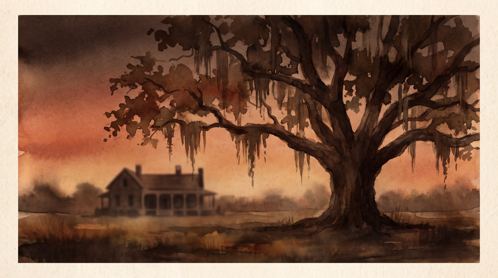
Naming the names history left out.
Beyond Avalon traces the enslaved people, families, and descendants connected to Avalon Plantation — the land that later became the University of Alabama in Huntsville — and follows where the wealth, power, and silence went afterward. This is not a story about rescue. It's about accountability, education, and giving Black history back its names.
This is Black history — we're just doing the paperwork.
Plantation records were built to erase the people they enslaved — no last names, no birthdays, no headstones. Genealogy and archival research can undo some of that erasure: cross-referencing wills, bills of sale, censuses, and freedom papers until a person who was recorded only as property gets a name, a family, and a story back. That work belongs to descendants and to the public record — our job is to document it carefully, cite it honestly, and hand it over.
This project centers the enslaved people themselves and the free lives their descendants built afterward — not the Jones family, and not the researchers. Where the historical record shows Black Alabamians building political power, schools, and land ownership in the face of enormous obstacles, we tell that story plainly. Where institutions benefited from slavery and never accounted for it, we say that plainly too.
What happened at Avalon
No academic jargon — just what the records show, in the order it happened.
In 1820, a Revolutionary War veteran named Lewellen Jones bought a large tract of land west of Huntsville, Alabama and named it Avalon. Jones died within weeks of the purchase — under strange circumstances local newspapers never fully explained — and the land passed to his son, Alexander Jones, along with 20 enslaved people.
The money and the people behind Avalon didn't start in Alabama. The Jones family's Virginia roots run through Bedford County: Capt. John Jones, Lewellen's father, died intestate around 1796, leaving what the court called "an estate both real and personal to a large amount" — wealth built in part on enslaved labor. His widow was Frances B. Jones; their daughters were Elizabeth (who married Jesse Anderson) and Nancy T. (who married Nelson Dawson); their sons were Lewellen Jones and Charles D. Jones. We know exactly what that wealth looked like in human terms: a 1789 receipt shows Philip Burton receiving £180 in Virginia currency plus ten enslaved people as his wife's marriage portion from John Jones. That is what a dowry cost in this family — ten human beings handed over alongside the cash.
Over the next four decades, Avalon grew into one of the largest plantations in Madison County. By 1860, 96 enslaved men, women, and children lived and worked there, housed in 35 separate dwellings on the property (Alabama Historical Association marker text). Their labor is what built the Jones family's wealth — wealth that outlived slavery itself and helped shape the county for generations.
The records keep naming people the system tried to keep nameless. In 1844, a lawsuit called Dearing v. Lightfoot was filed in the Lawrence County Circuit Court at Moulton, Alabama — a detinue suit, meaning it was fought over property, and the "property" it named was six enslaved people: Hercules (also recorded as Harceles, about ten years old), Solomon (about twenty), Aggy, Edward, Tilla, and Fenton. The court papers show Hercules and Solomon had each been mortgaged at $2,000 in 1840, and the testimony traces the six through Georgia and western Tennessee into north Alabama. Six names, six ages, six price tags — the archive only wrote them down because white litigants were arguing over who owned them. We publish them because they were people.
The same year Lewellen Jones bought Avalon, an Alabama legislative act formally freed a woman named Elizabeth (also recorded as "Eliza"), around age 40, along with three of her children: Evelina (13), Ann (6), and a three-year-old boy named Shandy. The act does not say who fathered Elizabeth's children — only that two Jones men, John N. S. Jones and Alexander P. Jones, were the ones who freed them. We do not know, and we do not guess.
What we do know is what Elizabeth's descendants went on to do with the freedom this act gave them.
Earliest documented enslaved person in the extended family network
A Virginia deed of gift from William Clopton to his daughter Ann Clopton — an ancestor of Mary Anderson, who would later marry Lewellen Jones — conveys an enslaved man named Peter, decades before any record yet found in the direct Jones surname line.
Earliest documented enslaved people in the direct Jones line
The will of Orlando Jones of York County, Virginia — great-grandfather of Lewellen Jones — names 20 enslaved individuals by name, divided among his wife, son Lane Jones (the direct Avalon ancestor), and daughter Frances Jones Dandridge, whose own daughter Martha later married George Washington.
Land bought and sold — and a marriage confirmed from the primary record
Capt. John Jones and his wife Frances Barber Jones sell 314 acres in Bedford County, Virginia. The same year, their son Lewellen Jones marries Mary Anderson — a marriage now confirmed from the primary record: the Louisa County, Virginia register of marriages (1766–1861, DGS 007578998, image 61 of 527) names "Llewellin Jones" and "Mary Anderson" on October 22, 1792, with the consent of her father Nelson Anderson, surety Alexander Anderson, and witnesses Martin Baker and Andrew Thomson. The marriage linked a second enslaving family into the network that would later found Avalon. Note: this Mary Anderson is not the colonial-era Mary Anderson in this project's Folder 12 documents — a different woman, and we do not merge them.
Capt. John Jones dies intestate in Bedford County, Virginia
The Bedford County court record describes an "estate both real and personal to a large amount." His widow was Frances B. Jones; his daughters were Elizabeth (married Jesse Anderson) and Nancy T. (married Nelson Dawson); his sons were Lewellen Jones — the future founder of Avalon — and Charles D. Jones. Seven years earlier, a 1789 receipt had already shown what that estate's wealth meant in practice: Philip Burton received £180 in Virginia currency plus ten enslaved people as his wife's marriage portion from John Jones. The Virginia fortune that preceded Avalon was denominated, in part, in people.
A Virginia in-law's will frees one enslaved child
Col. Nelson Anderson of Bedford County, Virginia — father-in-law of Lewellen Jones — dies leaving a will that names seven enslaved people and grants freedom to an enslaved boy, Lindsay Bonapartte, born in 1815. It is one of the only documented manumissions found anywhere in this family's records.
Avalon founded; Elizabeth and her children freed
Lewellen Jones establishes Avalon. In the same year, Elizabeth and three of her children — Evelina, Ann, and Shandy — are freed by Alabama legislative act.
The University Fund gets a $100,000 cap — not a $100,000 balance
The December 1823 charter of the Bank of the State of Alabama capped university-land money vested in the bank at $100,000. That figure was a statutory ceiling, never the fund's actual amount — a distinction later accounts blurred. The verified balance in the 1825–26 House Journal was $56,612.94¼, triple-corroborated from independent records.
Slave-trade revenue reaches the state treasury
In May 1825, Governor Israel Pickens reported that Alabama had realized $3,698.16¼ from the sale of Africans "brought in in violation of the law" — revenue pooled with other state funds, including the University Fund's vested capital stock in the newly chartered bank. That is a documented line from human-trafficking revenue to the financial engine that also capitalized Alabama higher education — a state-level connection in the Treasurer's own report, not speculation.
The cap comes off — and the fund blows past it
A January 1827 joint resolution removed the $100,000 charter cap on university money vested in the bank. Within two years the fund had exceeded the old ceiling: the treasury ledger shows $128,654.36¼ by January 1829. A cap repeated as a balance, then a balance that outgrew the cap — the slippage itself is part of the story.
Avalon grows to 96 enslaved residents
Under Alexander Jones and his heirs, Avalon expands into one of Madison County's largest plantations. Deeds, bills of sale, and census slave schedules from this period name dozens of individuals — see the Names Registry below.
Dearing v. Lightfoot names six enslaved people in open court
A detinue suit in the Lawrence County Circuit Court at Moulton, Alabama — litigated as a property dispute — names six enslaved people directly: Hercules (also recorded as Harceles, about ten), Solomon (about twenty), Aggy, Edward, Tilla, and Fenton. The case papers show Hercules and Solomon had each been mortgaged at $2,000 in 1840, and the testimony traces all six through Georgia and western Tennessee into north Alabama. It is one of the clearest examples in this project's files of the archive's double edge: the only reason these six names survive is that white litigants were fighting over who owned them.
Enslaved people divided among J. N. S. Jones's children
A Limestone County court orders the division of enslaved people belonging to a Jones family member recorded in the surviving transcription as "Alexander P. Jones," deceased, among seven heirs. A family Bible for this branch of the family records a son of John Nelson Spottswood Jones — Alexander T. Jones — who died just six weeks earlier, in June 1857, at age 23, apparently without a spouse or children. The seven heirs named in the 1857 division match, name for name, the seven surviving children of John Nelson Spottswood Jones, and a separate 1855 real-estate division among those same seven children again lists one legatee as "Alexander P. Jones." This strongly suggests the initial in both transcriptions ("P.") is a mistranscription of "T.," and that the estate divided here is Alexander T. Jones's own inherited share — not a separate estate belonging to his uncle, Alexander Pinckney Jones, who a 1866 Chancery Court record (below) shows was still alive. A tombstone in the Jones-Donnell family cemetery at Greenbrier, Limestone County, transcribed by descendants in 1971, removes almost all remaining doubt: it names the deceased in full as "Alex[ander] Thomas Jones," giving the same birth date (Jan. 29, 1834), death date (June 3, 1857), and age (23) already indicated by the family Bible. Taken together, we treat this as a record-confirmed identification, though we still have not examined the original Limestone County court order itself. The enslaved individuals themselves are not yet named in the surviving record — locating the original court order to identify them by name remains an active research priority.
Union troops occupy Avalon
Union forces briefly occupy the plantation during the Civil War, a rupture in the plantation economy that preceded emancipation.
Alexander Pinckney Jones dies; Huntsville town lots move through probate
A Madison County Chancery Court record shows Avalon's Alexander Pinckney Jones — brother of John Nelson Spottswood Jones — died around 1866, leaving no children of his own. His nephew, Paul Lewellen Jones (a Confederate captain and Huntsville lawyer), was appointed Administrator and petitioned to sell two Huntsville town lots to pay the estate's debts. The 1866–68 deeds that followed carry Avalon-linked town property — not just farmland — through the estate's chain of title. The heirs named are all children of John Nelson Spottswood Jones and Eliza Ann Haywood — the same generation named in the 1857 division above. Because the real Alexander Pinckney Jones lived until 1866, this record substantially strengthens the case that the 1857 "Alexander [P.] Jones, deceased" was actually his nephew Alexander T. Jones, who died in 1857.
The Jones family sells Avalon
After several family deaths, the estate is sold to Priscilla Holmes Buell Drake (1812–1892) and James Perry Drake (1797–1876), who hold Avalon roughly 1868–1871. Priscilla was a nationally recognized women's suffrage organizer — the only Alabama representative to the National Woman Suffrage Association in the 1860s; James was an Indiana legislator, Indiana State Treasurer (1850–53), and a Mexican War colonel who moved near Huntsville in 1861. There is no documented evidence either Drake was an abolitionist, and this site does not use that label. The "philanthropist" label in this orbit belongs to Robert Owen, their New Harmony associate — not to the Drakes.
Formerly enslaved Jones descendants buy land at Avalon
The Drakes parcel the former plantation and sell tracts to emancipated members of the Jones family — by sale, not gift — who return to the land not as property but as owners. Reuben Jones's Drake purchases are documented for January 1871 (Deed Books TT p. 488, UU p. 350); a Shandy Jones purchase is reported in the 2020 Alabama Historical Association transcript but the deed is not yet verified.
Shandy and Reuben Jones enter public office
Shandy Wesley Jones becomes one of the first Black state legislators elected from Tuscaloosa County. Reuben Jones — a Union Army veteran — becomes one of the first Black state representatives from Madison County. (An earlier version of this site described Reuben as Shandy's documented half-brother "born enslaved at Avalon"; both claims were unproven and have been withdrawn — see "What we got wrong," below.)
Columbus Jones warns Congress: the Klan controls Huntsville's freedmen
On April 27, 1868, Columbus Jones — a three-year Union Army veteran and "late of the Convention" delegate — writes to Congressman R. M. Reynolds from Huntsville reporting that freedmen are "taken from their beds at night" and "beaten almost to death by rebels disguised," that local law officers hold Klan loyalties above their oath of office, and that freedmen are "afraid to vote against the will of their employers" for lack of protection. It is one of the clearest first-person Black political accounts in this collection of Reconstruction-era terror and its capture of local law enforcement.
The Jones School opens
William Hooper Councill — who later founded what is now Alabama A&M University — teaches in a building owned by Reuben Jones, remembered as one of the first schools for Black students in Madison County. The Reuben Jones lease for Councill's freedmen's school (March 1869–March 1870, on Athens Pike plantation land; DB1 741–742) is a direct precursor thread to the chartered Huntsville State Normal School, which opened six years later on May 1, 1875.
"Uncle Isaac" runs his own plantation
At Druid's Grove in neighboring Limestone County — home of John Nelson Spottswood Jones, brother of Avalon's Alexander P. Jones — a newspaper column recalls a formerly enslaved coachman remembered only as "Uncle Isaac." Before the war he drove the Jones daughters to town in a carriage; by 1876, the same column reports, he "is running a big plantation once the property of his old marster." It is one of the clearest records found so far of a formerly enslaved person from this extended Jones plantation network building an independent life on land that had once enslaved him. His surname and the location of that plantation are not yet identified.
"What are you going to do with Lewellen Jones?"
A handwritten letter from Mrs. H. C. Jones of New Market, Alabama to a "Dr. Mason" reveals that the Jones family already knew, six years before the land was sold to the Huntsville Board of Education, that a planned "University Center" threatened the Lewellen Jones family graveyard. Her son, Harvie Jones — later the architect who would go on to survey the very farm buildings discussed below — had just shown her the university's model layout. The letter also independently corroborates the Jones-Perkins family relationship traced elsewhere on this site and preserves detail on an 1820 land deed and an 1825 lawsuit over a $12,000 debt tied to Lewellen Jones's mill interests. It does not name the enslaved people who lived and labored on that land — a silence this project treats as a reminder to keep searching probate records, tax rolls, and court testimony for the names this letter omits.
The land becomes a university
The Crawford family, who bought the remaining plantation land from the Drakes, sells it to the Huntsville Board of Education in 1956. The state takes ownership, and in 1966 the land passes to the University of Alabama in Huntsville — a land-acquisition milestone, distinct from the institution's 1969 founding (see below).
The Swartz deed memo
A 1971 deed memo — the Swartz memo — is flagged in the research files as a chain-of-title source for the Avalon land. Full transcription and citation are still under review; we log it here so the paper trail stays visible while the verification finishes.
A preservation survey notes the quarters are already gone
Architect H. P. (Harvie) Jones, FAIA, completes an architectural survey of the Drake-Garth-Jones Farm (Carl T. Jones House) at 5003 Garth Road, meticulously documenting the property's federal-period brickwork while noting, almost in passing, that the "old servants' quarters ... have long ago been cleared away." A survey trained to preserve brick and mortar found nothing worth preserving in the buildings where enslaved people actually lived — a modern, and unintentional, continuation of the same erasure this project works to reverse.
The cemetery is marked, at last
The Alabama Historical Association dedicates a marker for the Jones-Perkins Cemetery, relocated for preservation near UAH's Morton Hall — the first public acknowledgment on campus of what came before it.
A note on the 1792 marriage record: the register's handwriting has not yet been visually verified — the image tiles failed to render — so the reading of "Llewellin Jones" rests on the register's OCR and its indexers, not on our own eyes. We publish it as confirmed by the register's record-keeping, and we flag the limitation here rather than in the timeline above.
"Established in 1820 by Revolutionary War veteran Lewellen Jones, Avalon grew to be among the largest plantations in Madison County. By 1860, 106 enslaved persons worked the land and lived in 35 houses on the plantation... The Board of Education transferred ownership to the state with the land ultimately becoming The University of Alabama in Huntsville (UAH) in 1966." — Official Alabama Historical Association marker text, "Avalon Plantation & Cemetery," alabamahistory.net/madison
Correction, Sept. 2026: the marker text as published reads "106" — but a firsthand read of the 1860 slave-schedule manuscript counts 96. This site now uses the manuscript figure everywhere else; see "What we got wrong," below.
This is an open research question, not a closed case. We are actively verifying additional financial ties between the sale of enslaved people and institutional funds from this period — including a preliminary lead involving an 1825 Alabama Treasurer's Report — and we will publish updates here only once they meet our evidence standard, not before.
Why we call this institutional erasure
The history above is the "what." This section is the "why it matters" — the argument at the center of the academic paper this project grew out of, told in plain language.
Historian W. E. B. Du Bois warned that the story of Reconstruction had been rewritten into a "Propaganda of History" — not because the facts were unknown, but because institutions were "ashamed" of them and built cleaner, more comfortable narratives instead. Sociologist Jeffrey Olick describes something similar happening quietly inside institutions today: certain memories get official backing, funding, and signage — what he calls mnemonic hegemony — while other, equally true memories are left undocumented, unmarked, or simply harder to find. Philosopher Jacques Derrida went further: he argued the archive itself is never neutral. Whoever controls what gets filed, indexed, and preserved controls what future generations can even ask questions about — what he called archive fever, an authority built into the record-keeping itself.
Put simply: institutions don't need to destroy evidence to erase people. They just need to make white ownership, white deeds, and white institutional growth easy to document — while leaving Black kinship, labor, land claims, and burials scattered, unindexed, or filed under someone else's name. That is the pattern this project keeps finding at Avalon, and it is why we treat this website as a counter-archive: a deliberate effort to re-file the record under the names it left out.
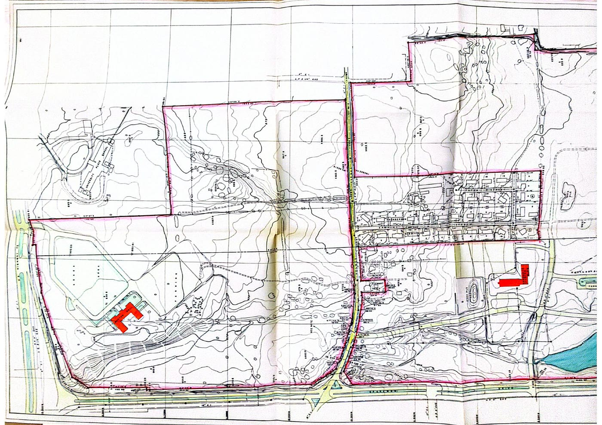
A personal copy of the June 1966 UAH campus topographic map — the year the land passed to the university. The pink outline traces the boundary of the former plantation landscape.
Three names for one pattern
The paper behind this site gives the pattern three technical names. Here's what each one means in plain language — and where it shows up at Avalon.
Archival violence
The harm built into the record-keeping itself. Wills that list people beside livestock. Census schedules designed, in part, to defend slavery. Twentieth-century finding aids that file Black lives under white family surnames — Jones, Donnell — so anyone searching for an enslaved ancestor has to start with the enslaver's name. The violence isn't only what's missing from the archive; it's how the archive was made. The historian Saidiya Hartman named the dilemma: the documents that preserve Black life are the same instruments that violated it. This project's answer is a counter-archive — re-filing the record under the names the original system left out — and a discipline: we name the silences as silences instead of pretending we can fill them.
Mnemonic hegemony
The pecking order of memory. Some stories get the marker, the funding, the footpath, the official backing — and others, equally true, get left undocumented, unmarked, or filed where nobody can find them. Whoever controls which memories get institutional support controls what a community is allowed to remember. The early-1900s Dunning School — historians who rewrote Reconstruction to erase Black political agency in service of white supremacy — shows what this looks like as a deliberate academic project. At Avalon it looks quieter: a named, marked cemetery for the white family, and an unmarked one behind Morton Hall. Same campus, two memories, two very different fates.
Institutional erasure
The umbrella term for all of the above, and the title concept of the paper: the way institutions — universities, courthouses, archives, newspapers — can make whole communities disappear from the record without ever burning a single document. They just make white ownership, white deeds, and white institutional growth easy to document, while Black kinship, labor, land claims, and burials come out scattered, unindexed, or filed under someone else's name. The Willie and Lola Jones homestead, below, is the most recent case study.
The Willie and Lola Jones homestead
This is the clearest, most recent, and most contested example of the pattern above — and it's still unfolding, decades after the plantation era ended.
Willie and Lola Mae Jones's family held land along Athens Pike — now Holmes Avenue — going back to around 1870, in the years just after emancipation (Where Is My Land, 2023). The property held a well that the family relied on and, by multiple accounts, shared with neighbors (WHNT News 19, 2023).
The well is condemned
In 1954 the City of Huntsville moves to condemn a 60-by-40-foot parcel containing the family well (Probate Cause No. 12257). The Probate Court's initial compensation award is $900 — the family remembers turning down a $900 pre-condemnation offer, but the documented $900 is the court's award of December 30, 1954; both accounts are presented here with sourcing. The family appeals, and a circuit-court jury raises the award to $1,250 in November 1955. The family remembers officials declaring the water "unfit"; the official record's stated purpose is securing a clean public water supply — no health or inspection order declaring the water unfit has been located. One month before the condemnation was authorized, the city handed its water system to a new utility board because the "source of supply was polluted and inadequate" (McCauley, Huntsville Historical Review 25(1), Jan. 1998) — a documented municipal water crisis. (WHNT News 19, 2023; UAH's own Athens Pike timeline; official condemnation-decree figures at UAH's Athens Pike documents page.)
A disputed deed
A warranty deed dated October 15, 1958 conveys two tracts — including a 2.25-acre parcel — from Willie and Lola Mae Jones to W. L. Sanderson Realty, headed by the City of Huntsville's own land-acquisition chief (UAH Athens Pike documents). Willie Jones's surviving children say their father was illiterate, signed everything else with an "X," and that his signature on this deed was forged (WHNT News 19, 2023).
Land transfers to the university system
Deeds from the Sandersons convey the 2.25-acre tract to the Board of Trustees of the University of Alabama (April 6, 1962). A separate 1962 condemnation proceeding compensates several Jones heirs and the Board itself for fractional interests in the same tract — the Board filed a cross-complaint as a partial owner (Equity Cause No. 18604, December 1963) and was awarded a 1/8 interest ($646.02) in the February 1964 decree (UAH Athens Pike documents).
The Business Administration Building
The University of Alabama in Huntsville is founded in 1969 on land that includes the former Jones property. The family says the true acreage taken was closer to 10–12 acres, not the 2.25 acres in UAH's public records — a discrepancy that remains unresolved (Where Is My Land, 2023).
The family goes public
Working with the national organization Where Is My Land, Willie Jones's grandchildren take their case to Huntsville City Council and local media, asking for an independent review and restitution — while UAH maintains the family was legally compensated (AL.com, 2024; WHNT News 19, 2025).
"The public records concerning the land in question, which is a 2.25-acre parcel on Athens Pike on Holmes [Avenue], indicate Mr. Jones and his immediate family, with the aid of legal counsel, were compensated for their interests in the property when Madison County and the City of Huntsville acquired it during the 1950s and early 1960s... neither the UA System Board of Trustees nor UAH acquired the property from the Jones family." — UAH statement to WHNT News 19, quoted in "Family wants city leaders to investigate stolen land claim," WHNT News 19, Feb. 13, 2025
Why the maps we just found matter here
While reviewing new material from the archive this month, we located a set of undated engineering plan-and-profile sheets for Holmes Avenue road construction, prepared by the firm G. W. Jones and Sons — almost certainly mid-1960s, based on the surrounding UAH Board of Trustees correspondence they were filed with. These sheets physically trace the exact Athens Pike / Holmes Avenue corridor at the center of the Willie and Lola Jones dispute: the road being surveyed and graded here is the same road their homestead sat on.
Read against the 1966 UAH topographic map above — which already shows the campus property boundary enclosing that stretch of Holmes Avenue — these documents are physical, contemporaneous evidence of the same infrastructure transformation the Jones family says swallowed their land. We are not claiming these maps resolve the dispute; we're flagging them as directly relevant primary sources that deserve a place in any independent review of the Willie and Lola Jones claim.
Follow the story yourself
This is ongoing local reporting, not settled history — we're linking directly to it so you can read the reporting and the family's and university's statements in full, rather than relying on our summary.
"Black family claims their land, well was stolen"
The first detailed WHNT News 19 report: the 1954 condemnation, the $900 offer, and the forgery allegation.
"Jones family takes fight ... to Huntsville City Council"
Adolph Jones, grandson of Willie Jones, asks the city council for restitution, saying the family knows it won't get the land back but wants accountability.
"Family wants city leaders to investigate stolen land claim"
The most recent update, including UAH's full public statement on the records and the family's continued push for a city commission.
Athens Pike — Official Documents Timeline
UAH's own published timeline and excerpted deed/condemnation records for the parcel, including exact acreage, dates, and compensation amounts.
Where Is My Land: Jones Family press statements
The advocacy organization's original announcements, including the family's account of the well, the acreage dispute, and their call for reparative justice.
Nearly 4m records of enslaved people in 20 former British colonies now searchable online
Ancestry and University College London's Centre for the Study of the Legacies of British Slavery have digitised and indexed nearly four million records across 300,000 pages of enslavement registers (1813–1840) — the same T71 series this project's British-register research draws on.
Named graves, unnamed graves
The Jones-Perkins Cemetery marker names members of the white Jones and Perkins families outright. A short walk away, behind UAH's Morton Hall, sits a smaller, older cemetery on what was once a family farm — three box graves and two headstones, all of them unidentified in the university's own campus profile of the site. The 2020–2021 Alabama Historical Association marker was the first time either burial ground was publicly acknowledged on campus at all. Visibility itself is not neutral: whose grave gets a name, a marker, and foot traffic, and whose gets none, is its own quiet form of the erasure this section describes.
A related pattern, one mile away
This map of 19th-century downtown Huntsville, held in a UAH-area archive, marks the location of a lynching tree on the Madison County Courthouse Square. We are not asserting a documented link between this site and the Avalon/Jones plantation network specifically — the connection is thematic, not evidentiary. We include it because it is part of the same broader landscape of racial terror and public memory this project's sources keep surfacing, and because, like the Morton Hall cemetery, it is a site with no public historical marker today.
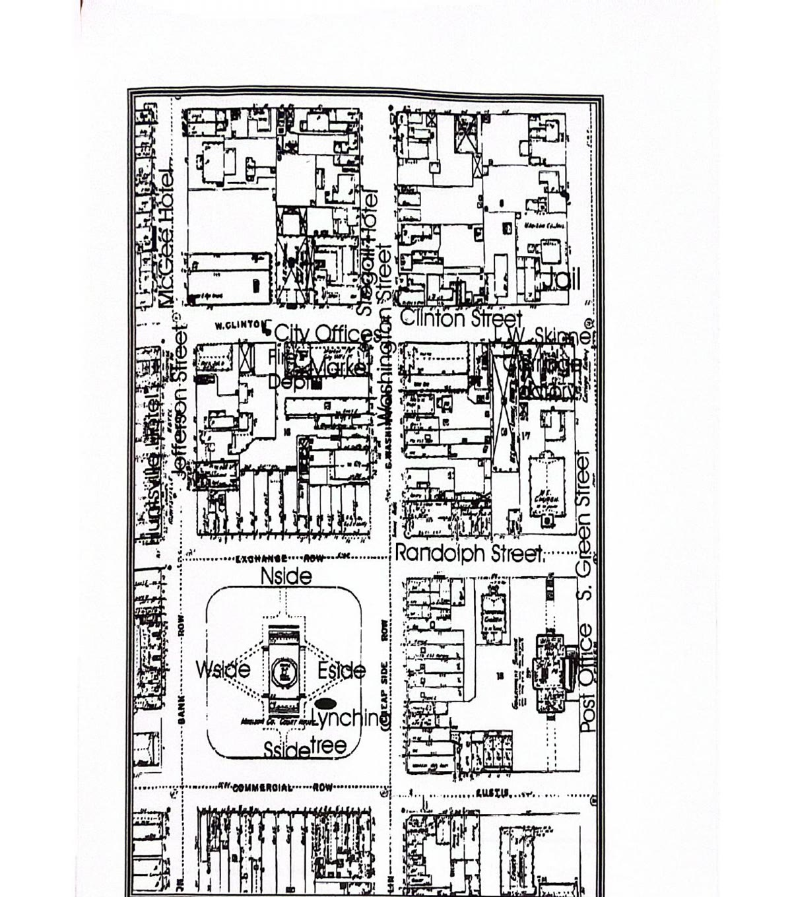
Recommendations, not a verdict
The paper this section is drawn from stops short of claiming a single, coordinated conspiracy across two centuries — the evidence doesn't support that, and overstating it would undercut everything else here. What it does argue for is concrete and achievable:
Release the complete file
A good-faith, independent review of the Willie and Lola Jones claim — releasing the complete condemnation, deed, and payment records — would let neutral parties, not just the two sides, evaluate the forgery allegation and the acreage discrepancy.
A descendant advisory structure
Descendants of the people enslaved and displaced at Avalon should have real authority — not just a comment period — over how this history is interpreted, named, researched, and memorialized going forward.
Cemetery and archaeological care
The unnamed graves behind Morton Hall deserve the same investigative and preservation effort as any named burial ground — identification work, protective stewardship, and public signage.
Reparative and commemorative policy
Beyond markers, institutions that benefited from this land have room to consider concrete reparative measures — scholarship access, formal acknowledgment, or restitution frameworks — as a matter of forward-looking policy, not legal admission.
Reunite the fragmented chancery records
The Bedford and Louisa County chancery causes behind this research — the Anderson estate disputes, the Jackson distribution, the suits bracketing the Jones-Anderson marriage — sit in separate files, separate indexes, and separate archives. A funded, systematic transcription of the full chancery run would turn scattered case numbers into a continuous paper trail.
Fund the Bedford chancery read
Virginia's Piedmont-to-Alabama migration corridor runs straight through Bedford County's chancery records. The Jones-Anderson estate and marriage suits already located are only the beginning; completing the Bedford read is the single highest-value archival investment this project has identified.
Mark the Louisa County marriage site
The October 22, 1792 marriage of Lewellen Jones and Mary Anderson in Louisa County, Virginia — confirmed from the county marriage register — is the documented origin point of the network that became Avalon. A historical marker or interpretive acknowledgment there would give the Virginia half of this story the public footprint it has never had.
Preserve the Dearing testimony
The 1844–48 Dearing v. Lightfoot case file names six enslaved people — Hercules, Solomon, Aggy, Edward, Tilla, Fenton — and traces their forced movement from Georgia through Tennessee into north Alabama. Testimony like this is vanishingly rare. It should be fully transcribed, indexed under the six names, and preserved against the decay and dispersal that swallow most county court files.
What we got wrong
This project holds archives to a standard of correction and transparency — so it holds itself to the same one. When a claim on this site turns out to be wrong, it gets corrected here, in public, with the date. The contact section still takes corrections from anyone; we would rather be corrected than wrong.
The GPR survey and the mandible
Earlier project material suggested ground-penetrating radar had found roughly 60 burial anomalies near the marked Jones-Perkins Cemetery, and that a human mandible turned up during campus construction. Corrected: there were no grave-pattern anomalies near the Jones Cemetery — the unreplicated set sat near the north campus entrance — and the mandible was found by grounds crew in the 1980s, not during construction. The WAFF 48 2022 story was also located, so any claim that the find went uncovered is withdrawn.
Columbus Jones's Freedman's Bank record
Columbus Jones was reported here as Freedman's Bank Account No. 31, with his mother named as "Eliza Jones." Corrected from a fresh read of the 1867 manuscript: the account is No. 29, and the entry names no parent at all — the mother claim came from derivative indexing, not the register itself. The same manuscript read lists Reuben and Turner as alive; only Wade, Shandy, and David are recorded dead.
Reuben Jones's relationship to Shandy
This site previously presented Reuben Jones as Shandy Wesley Jones's documented half-brother, "born enslaved at Avalon." Both claims were unproven and have been withdrawn. Reuben's service as a Reconstruction-era state representative from Madison County stands; his kinship to the family is back under investigation.
The "$100,000 University Fund"
An earlier version of this site repeated "$100,000" as the University Fund's amount. Corrected: $100,000 was the December 1823 charter cap on university money vested in the Bank of the State of Alabama — a ceiling, never a balance — removed by joint resolution in January 1827. The verified figure is $56,612.94¼, triple-corroborated; the treasury ledger shows the fund past the old cap ($128,654.36¼) by January 1829.
The 1860 enslaved-person count: 106 → 96
Earlier versions of this site repeated 106 — from secondary sources, including the Alabama Historical Association marker text — as the number of enslaved people at Avalon in 1860. A firsthand read of the 1860 slave-schedule manuscript counts 96, and the site now uses the manuscript figure throughout. The published 106 is anchored to page 483 of the schedule — the locator was right; only the count was wrong. The 106 is arithmetically possible only by counting ten of the following owner's rows as Jones's: stamped page 484, right-side rows 30–39 belong to Saml. C. Shanklin, whose name is written at row 30. (A September 2026 review briefly claimed no Alex. P. Jones entry existed at all; that was a page-numbering mix-up — local PDF leaf numbers were confused with the archive's stamped page numbers. The manuscript entry reads "Alex. P. Jones"; no "Buck Jones" appears in the 1860 Madison County slave schedule.)
The 1850 enslaved-person count: 139, verified
A figure of 139 from the 1850 slave schedule, listed under "Alexander P Jones," was first noted here as verification-in-progress. A firsthand row-by-row read of the manuscript (NARA M432, Roll 21; 36th District, Madison County, enumerated October 29, 1850, by C. D. Kavanaugh) counts 36 + 42 + 42 + 19 = 139, with Alexander S. Perkins's entry beginning on the following row. It is now presented as verified. The first Jones row lists a 45-year-old mulatto woman.
They had names. Here are the ones we've found.
Plantation and probate records rarely recorded surnames, birthdates, or family ties for enslaved people — that erasure was deliberate. Every name below was recovered from a will, deed, census, bill of sale, or freedmen's record, and is cross-checked against our full research database. We keep every name, even fragments, on the theory that more names is better than fewer — a name recorded here today can be connected to a family tomorrow.
These are 424 individually documented and cited people pulled directly from our full working database of over a thousand entries, and counting connected to the Jones-Perkins kinship network across Virginia, Alabama, and Georgia records dating from 1683 into the twentieth century. Some entries are well-documented; others are single fragments awaiting verification — we publish both, clearly labeled, because a partial name is still better than no name.
The paper trail
Genealogy work like this runs on original documents — wills, censuses, deeds, and probate files. Here are a few of the primary sources anchoring this research.
Browse the complete key findings folder
The documents below are highlights. A curated set of the highest-value sources — wills, chancery cases, claims, labor contracts, and maps — is organized in a shared Google Drive folder for anyone who wants to dig deeper or verify a source directly.
Open the key findings folder →Scan to open the full document archive on your phone
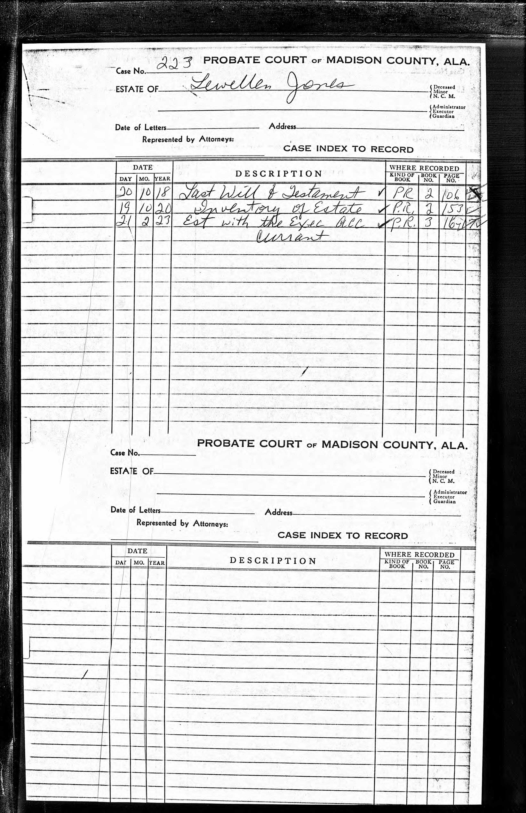
Lewellen Jones Probate Index (1820)
The probate case index opened after Lewellen Jones's death just weeks after purchasing Avalon — the starting point for tracing how the estate, and the people enslaved on it, passed to his heirs.
Probate Cover Listing 47 Enslaved People
The cover sheet of the same probate case, itemizing enslaved individuals as estate property alongside land and livestock — the blunt bookkeeping this project works to reverse by restoring names and stories.
1850 Census Slave Schedule — A. S. Perkins
Six enslaved people are recorded under Alexander Spotswood Perkins in District 36, Madison County — five women and girls and one man, listed only by age and sex. We've added what we found in the Names Registry.
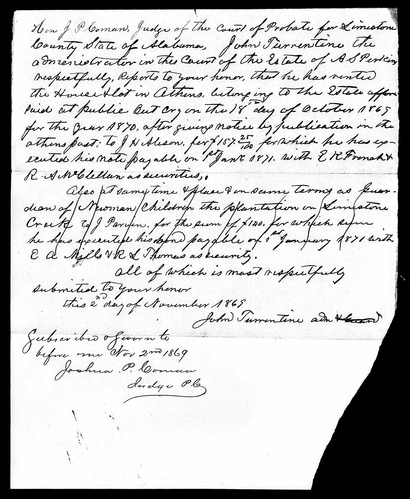
Perkins Probate Records (1868–1869)
Post-war probate filings referencing "the plantation in Limestone County" — evidence used to trace how Jones-Perkins family wealth persisted after emancipation.
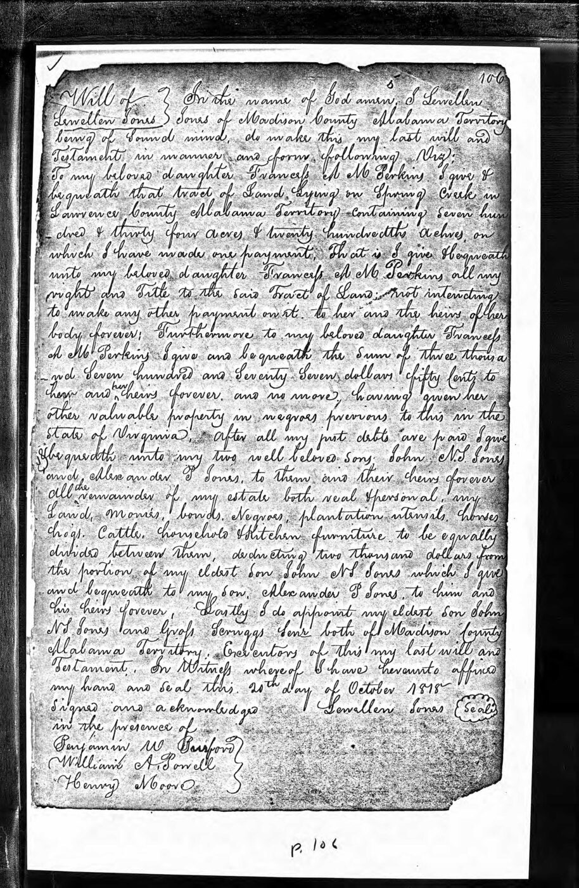
The Will of Lewellen Jones (1818)
The founding document of the Jones-Perkins network: Lewellen Jones divides land and "negroes" between daughter Frances A. M. Perkins and sons John N. S. Jones and Alexander P. Jones. Recorded Madison County Court, April Term 1820, p. 106.
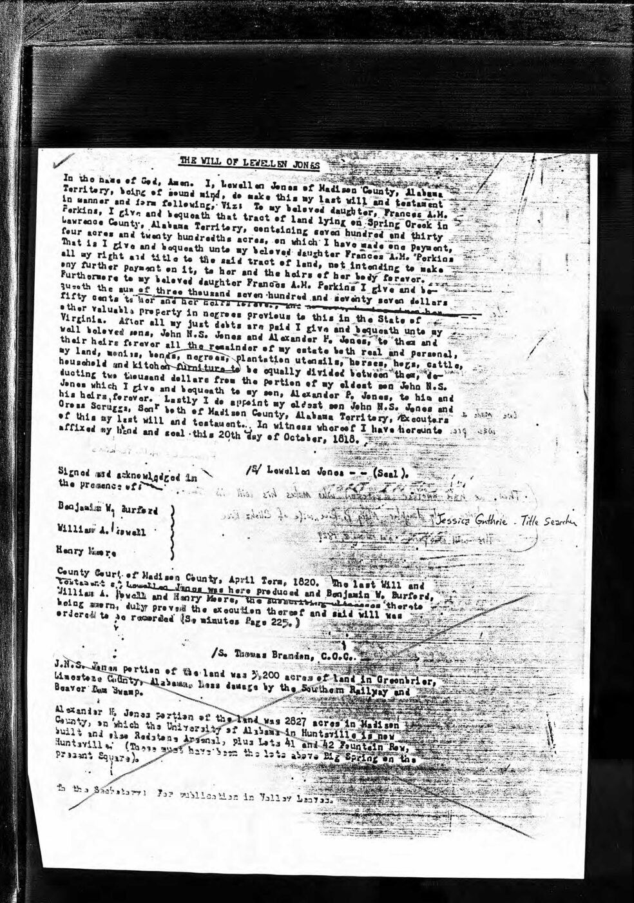
Annotated Transcription — Where the Land Went
A researcher's typed transcription of the same will carries a handwritten note: Alexander P. Jones's 2,827-acre share is "the land on which the University of Alabama in Huntsville is now built and also Redstone Arsenal, plus Lots 41 and 42 Fountain Row." The clearest documentary line from the enslaving estate to the modern campus.
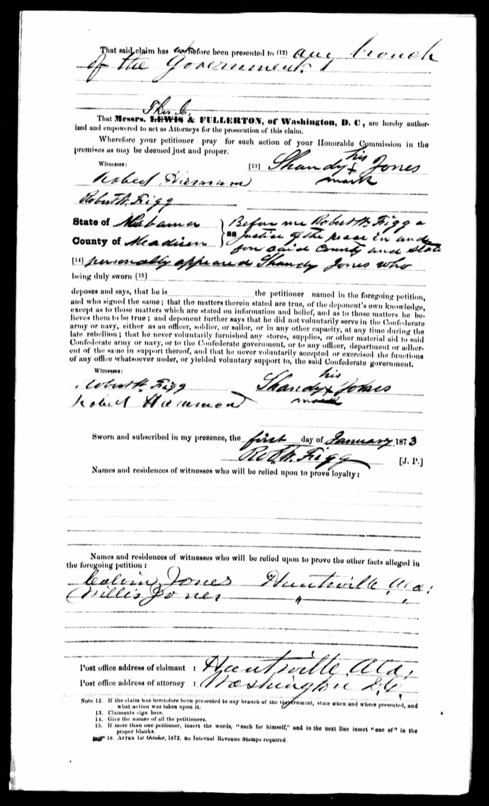
Southern Claims Commission Affidavit — Shandy Jones (1873)
Shandy Jones, signing by mark, swears before a Madison County justice of the peace that he gave no voluntary aid to the Confederacy, supporting a wartime-loyalty claim. Witnesses Calvin Jones and Willis Jones, both of Huntsville, point to a wider freed Jones family network.
SCC Claims Cluster — Nancy, Marshall & Zachariah Jones (1871–1877)
Nancy Jones (Claim No. 2,753, enslaved by Alexander P. Jones) sought USD 582 for corn, hogs, cattle, and a mare taken by Union forces in 1863; only USD 102 was allowed. Her own 1876 deposition and that of her husband, Marshall Jones, describe farming ~80 acres on Alex Jones's land after emancipation and being told by Jones himself, early in the war, that they were free and could trade and own property. Their son Zachariah Jones (Claim No. 2,273) sought USD 365 for livestock taken by Gen. Wilder's and Gen. Thomas's commands; his claim was barred for lack of written vouchers — a direct consequence, he testified, of being denied education under slavery.
SCC Claims — Anthony, Bettie F. Perkins, Cyrus, Dandridge, Rachael & William Jones (1871–1873)
Six further Madison and Limestone County claims round out this cluster. Anthony Jones (Claim No. 3,137) signed his own name — rather than an X-mark — on his 1871 filing, evidence cited in the thesis as literacy functioning as resistance to Alabama's 1832 Education Prohibition. Bettie F. Perkins (No. 21,755), Cyrus Jones (No. 10,247), and William Jones (No. 18,997) all filed April 20, 1871 on the same roll (33), suggesting a shared filing moment. Rachael Jones (No. 18,679) filed January 15, 1873, the same date as, and with a claim number sequential to, the already-logged Shandy Jones claim (No. 18,680). Dandridge Jones (No. 9,104), filed October 31, 1871 in Limestone County, is a newly identified claimant whose relationship to the Shandy Jones Limestone County claim is a lead, not yet confirmed. All were classified Barred and Disallowed.
Anthony Jones, No. 3,137 → · Bettie F. Perkins, No. 21,755 → · Cyrus Jones, No. 10,247 →
Dandridge Jones, No. 9,104 → · Rachael Jones, No. 18,679 → · William Jones, No. 18,997 →
Estate of Seaborn Jones & Sandy Bynum / Wiley Jones SCC Claims
The Estate of Seaborn Jones (Claim No. 19,875) split a USD 650 award among 18 heirs, disqualifying 11 — including two who served in the Confederate 4th Alabama Cavalry — and paying only 7 minor heirs USD 233.33. Property witness Robert Criner, recorded as "colored," testified alongside white witnesses; a related Seaborn M. Jones claim (No. 48,063) was allowed in full for one black mare, with Wilson Jones (Colored), an enslaved miller and cabinet maker at the George T. Jones mill, testifying as a loyalty witness that "we colored people thought and we still think if there was any Union men he was one." Sandy Bynum (No. 14,648, filed March 13, 1879) and Wiley Jones (No. 13,503, a white Blount County Unionist filed April 29, 1872 and disallowed for driving a Confederate supply team) round out this Madison County claims group.
Seaborn Jones, No. 19,875 → · Sandy Bynum, No. 14,648 → · Wiley Jones, No. 13,503 →
Columbus Jones's 1868 Letter to Congress — the Klan Controls Huntsville
Writing April 27, 1868 to Congressman R. M. Reynolds, Columbus Jones — a three-year Union Army veteran and "late of the Convention" delegate — reports that freedmen in the Huntsville area are "taken from their beds at night" and "beaten almost to death by rebels disguised," that local law-enforcement officers hold Klan loyalties above their oath of office, and that freedmen are "afraid to vote against the will of their employers" for lack of protection. A rare Black-authored, first-person account of Reconstruction-era terror and its capture of local law enforcement.
Drake-Garth-Jones Farm Architectural Survey (1992)
H. P. (Harvie) Jones, FAIA, surveys the Drake-Garth-Jones Farm (Carl T. Jones House), 5003 Garth Road, Huntsville, documenting federal-period brickwork in detail while noting, almost in passing, that the "old servants' quarters ... have long ago been cleared away." A preservation survey trained to save brick and mortar found nothing worth preserving in the buildings where enslaved people actually lived.
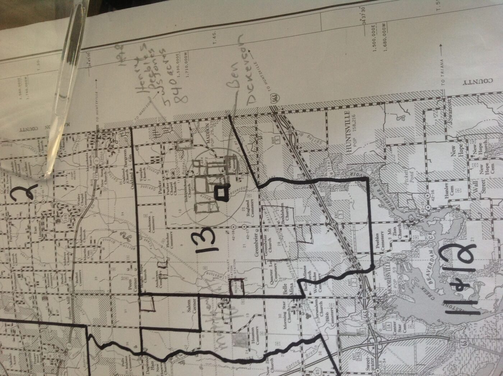
Land Parcel Research Map (Madison/Limestone Co.)
A working research map, hand-annotated with tracts belonging to "Henry's Peebles" (840 acres) and Ben Dickerson near District 13 — used to cross-reference Jones-Perkins land against neighboring Black-owned land in the decades after emancipation.
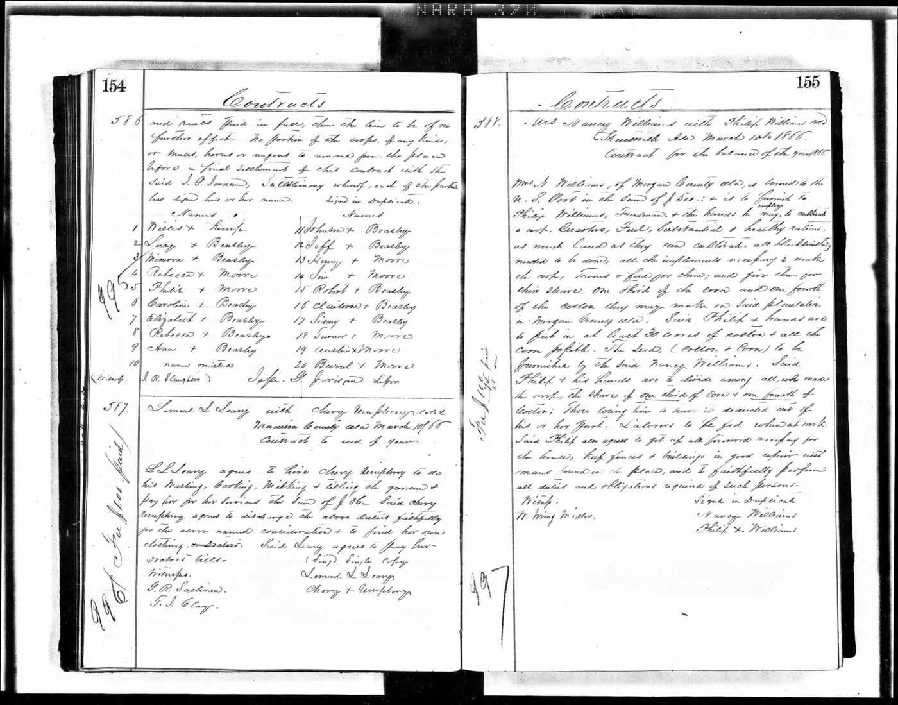
Freedmen's Labor Contract Register (1866)
Pages 154–155 of a Freedmen's Bureau-era contract register recording numbered labor agreements between freedpeople surnamed Moore, Beazley, and Jordan and local landowners in Madison and Morgan Counties — the same register series that documents Turner Moore's 1866 labor contract cited elsewhere in this research.
Contract-Book Index — "Jones, Columbus + Bro."
An alphabetical index card pointing researchers to the recorded labor contract for "Jones, Columbus + Bro[ther]" at volume 1288, page 178 — the archival trail that led to Columbus Jones's 1867 labor contract, a key post-emancipation record for a name already documented in the Names Registry.
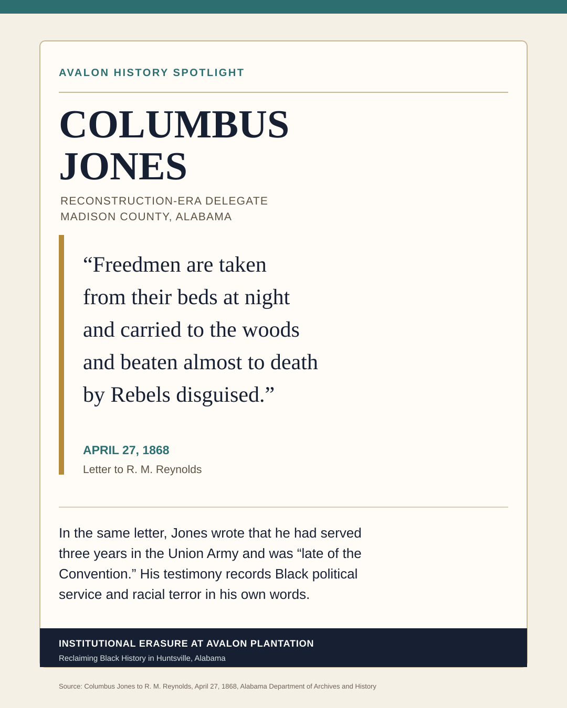
Avalon History Spotlight — Columbus Jones
A research-summary graphic created for this project, profiling Columbus Jones as a Reconstruction-era delegate in Madison County and pairing his 1867 labor-contract record with a period account of Klan-style violence against freedpeople — designed for public-facing sharing alongside the archival contract-book index above.
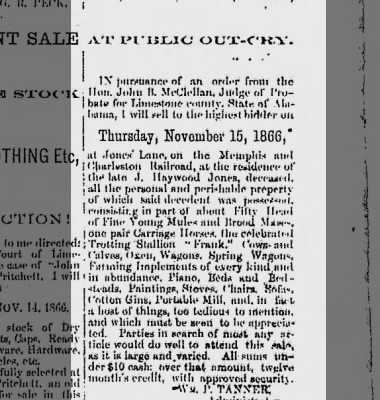
J. Haywood Jones Estate Sale Notice (1866)
A public-outcry sale notice for the late J. Haywood Jones's estate — mules, horses, a trotting stallion, wagons, gins — ordered by the Limestone County probate judge. Unlike the 1820 Lewellen Jones inventory, no enslaved people appear among the property, a small but telling marker of the year between them: emancipation.
Dearing v. Lightfoot — a detinue suit over Hercules and Solomon (1844–1848)
William Dearing, holding an 1840 mortgage from James Jackson, sued John F. Lightfoot in detinue for two enslaved boys — Hercules (about ten) and Solomon (about twenty) — each valued at $2,000. The sworn depositions name four more people outright — Aggy, Edward, Tilla, and Fenton — and trace Jackson's enslaved people from Jefferson County, Georgia and western Tennessee into Lawrence County, Alabama. Every one of them is logged in the Names Registry.
Elizabeth Berry's letter to S. G. Berry — signed "Elizabeth Berry or Jones" (May 1, 1842)
Writing from Jackson County, Alabama, Elizabeth Berry asks S. G. Berry to come or send money to pay off a judgment of about thirty dollars, and asks that Abe Hunter send tobacco "By Jim when he comes in." She signs the letter "Elizabeth Berry or Jones" — three words that open an identity question this project is still working on. The letter was filed as an exhibit in the Elizabeth Jones v. Samuel G. Berry chancery case.
The 1792 marriage — confirmed from the Louisa County register
A signed-in read of the Louisa County marriage register confirmed what had only been a descendant's statement: "Llewellin Jones" to "Mary Anderson," October 22, 1792 — consent of Nelson Anderson, father of the bride; Alexander Anderson as surety; witnesses Martin Baker and Andrew Thomson. This is the marriage at the root of the Jones-Anderson line, and the register puts it in Louisa County, not Bedford.
The Bedford chancery read pass — six cases, one family backbone (1805–1841)
A systematic read of 110 images across six previously unread Bedford County chancery cases mapped the Bedford Jones family that keeps surfacing in this research: John Jones (d. ca. 1796, intestate), his wife Frances B., daughters Elizabeth (m. Jesse Anderson) and Nancy T. (m. Nelson Dawson), and sons Lewellen and Charles D. Jones. The files name enslaved people outright — fourteen in a single 1841 case — and document a 1789 marriage portion of £180 plus "Ten Negroes & Other Things." Kept strictly separate from the Madison County Jones family until the deeds say otherwise.
A Jones cluster in Bedford Co., VA
In August 2026 we reviewed five 19th-century chancery case files from Bedford County, Virginia, all involving people surnamed Jones. Virginia's Piedmont-to-north-Alabama migration corridor makes this cluster worth tracking, but no genealogical link between these Bedford County Joneses and the Avalon/Madison County, AL Jones family (Lewellen Jones and his descendants) has been established. We are logging them as leads, not conclusions, pending deed, tax, and migration research.
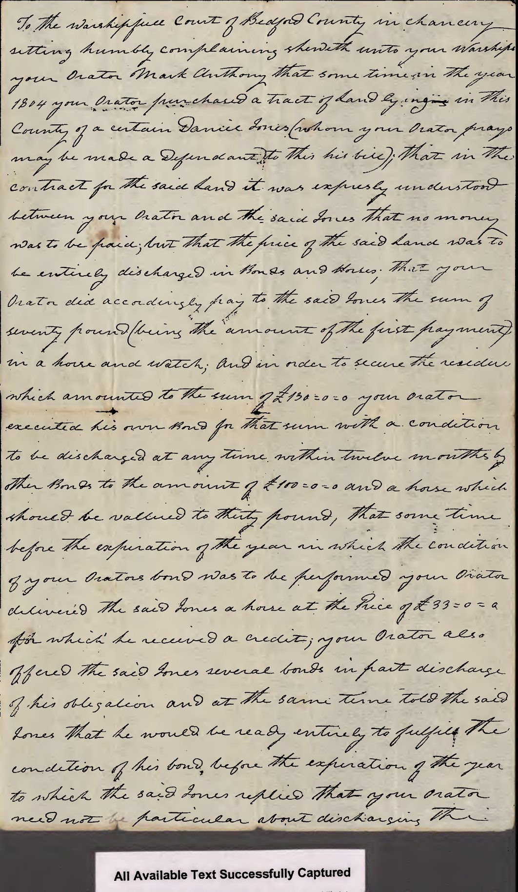
Mark Anthony v. Daniel Jones (1810)
An 1804 land-purchase dispute in Bedford Co., VA between Mark Anthony and Daniel Jones, later drawn into chancery over an assigned bond. No enslaved people are named in this file — included here only to document the Jones landowning cluster this batch surfaced.
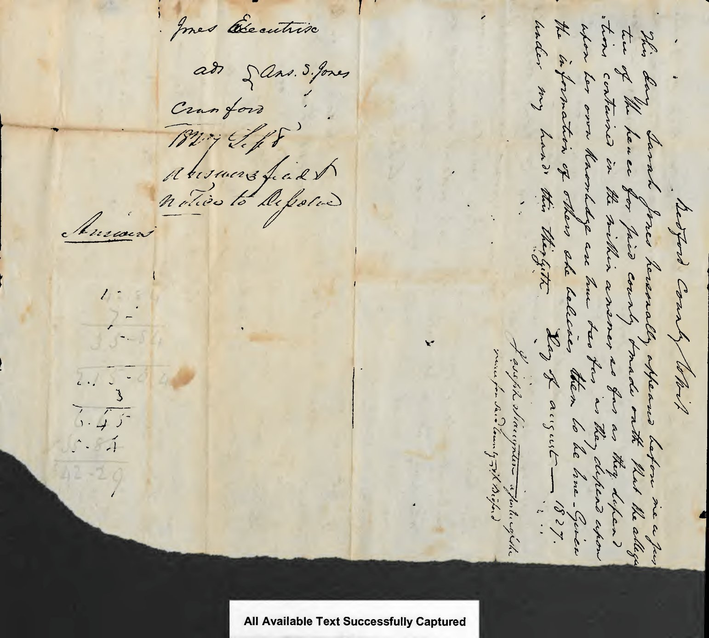
Crawford v. John & James C. Jones — "Ben & Milly" named (1828–29)
Samuel Crawford sued over a $90 bond for the 1822 hire of two enslaved people, Ben and Milly, held by the Jones family of Bedford Co., VA. We've logged Ben and Milly in the Names Registry as an unconfirmed Virginia lead. (The archive's index card reads case no. 1828-025; the digital scan is filed under 1828-035.)
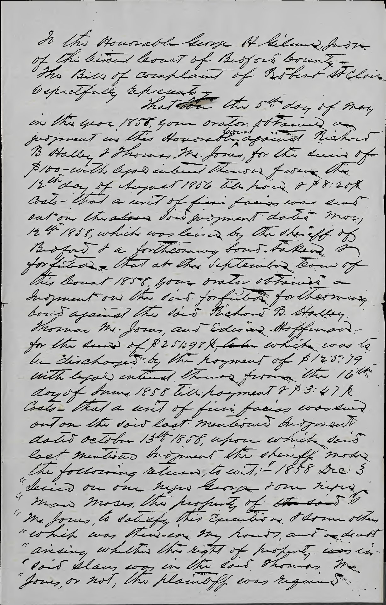
St. Clair v. Thomas M. Jones — "George & Moses" seized (1858–59)
A creditor's execution against Thomas M. Jones records the Bedford Co. sheriff's December 1858 levy on "one negro George & one negro man Moses" to satisfy a debt, before Jones sold his land and removed to Botetourt County. Both men are logged in the Names Registry as an unconfirmed Virginia lead.
Elizabeth J.L. Jones v. L.N. Dooley (1869)
A bare Reconstruction-era summons naming an Elizabeth J.L. Jones as plaintiff against L.N. Dooley in Bedford Co., VA — no surviving bill of complaint to reveal the dispute. Included as a possible thread back into the same Bedford Jones cluster, not as a confirmed relative.
Seven newly located Virginia chancery causes, and the Anderson-Jackson estate cases behind them
A fresh pull from the Library of Virginia's Chancery Records Index surfaced seven case files directly naming the Jones, Anderson, and Perkins families across Bedford and Louisa Counties — including two that follow up directly on wills already central to this project's account of the Jones-Anderson marriage.
Admr. of Alexander Anderson v. Admr. of Nelson Anderson (1834)
An estate dispute following directly from Col. Nelson Anderson's 1819 will (proved 1820), which named grandsons John S. Jones and Alexander Pinckney Jones as legatees and manumitted the enslaved boy Lindsay Bonapartte. Flagged as a top priority for full transcription.
Frances Anderson & Nelson Anderson et al. v. Executors of Thomas Jackson (1802)
Follows directly on Thomas Jackson's 1791 will (proved 1794), which bequeathed sixteen enslaved people by name across nine households. Filed jointly by Frances Jackson Anderson and her husband Nelson Anderson, this case is a direct, court-generated window onto how those sixteen people were actually distributed among Jackson's heirs. Highest priority for full transcription.
Philip Burton v. Lewellen Jones (1805) & John Jones v. Lewellen Jones et al. (1821)
Two Bedford County suits bracketing Lewellen Jones's 1792 marriage into the Anderson family and his 1820 death, placing him and his heirs in Virginia chancery court more than a decade before and again a generation after that marriage.
Nelson Anderson v. Lyddal Britton (1794)
The earliest of the seven newly located causes, placing Nelson Anderson in Louisa County chancery court a generation before the Anderson-Jones marriage this project has traced in detail.
J.M. Anderson & J.A. Clarkson v. Thomas M. Jones & William B. Jones (1866)
Names a Thomas M. Jones who recurs from an 1859 Bedford County case already logged in this project's evidence base (the "St. Clair v. Thomas M. Jones" file above), suggesting continuity in Bedford County Jones-family litigation across the Civil War.
Owens/Perkins v. Jones Estate Litigation (1855 & 1858)
William R. Jones and Abraham Perkins appear as plaintiff and defendant in reversed roles across two linked Bedford County filings — a genuine Perkins-Jones legal relationship, not yet confirmed as connected to the Frances Anna Maria (Perkins) Jones line documented elsewhere on this site.
Alabama HR32 (2025) — Elvina Love Named
A 2025 Alabama House Resolution honoring Shandy Wesley Jones's legislative service provides the first documentation of his wife's identity: Elvina Love, reportedly born 1816 in Huntsville, married Shandy in 1837, and living in Mobile by 1871 as an AME Zion pastor's wife. A commemorative, secondary source — the underlying marriage, residency, and death records have not yet been independently located.
Alabama Historical Association marker
In 2020, after years of advocacy, the Alabama Historical Association and Auburn University's public history program dedicated a historical marker naming Avalon Plantation and its cemetery — relocated to UAH's campus near Morton Hall for preservation. It is one of the only physical acknowledgments, anywhere, of the people enslaved on the land the university now occupies.
Two more markers are planned: one for the site of the enslaved village and the Jones School, and one for a separate slave cemetery. This project supports that ongoing marker and interpretive-trail effort.
Tracing the kinship and plantation network
We build family trees in both directions — the enslavers, to follow the money and power, and the enslaved and their descendants, to restore what was taken — and we map the plantations and places those families moved through, from colonial Virginia to Madison County to Tuscaloosa and beyond. Here's what the evidence shows so far.
Elizabeth's descendants
Elizabeth's children Evelina, Ann, and Shandy were named in the 1820 emancipation act — which names only Elizabeth and her three children, not Columbus or Reuben, so their tie to this family stays under investigation. Shandy Wesley Jones and Reuben Jones both became Reconstruction-era state legislators — Shandy from Tuscaloosa County, Reuben from Madison County — a documented line from the 1820 act to the statehouse within a single generation. The family's geography runs Madison County to Tuscaloosa: Shandy built his life as a barber and legislator in Tuscaloosa, while Columbus lived and worked between Tuscaloosa and Madison County. (Reuben's kinship to the family is still under investigation; an earlier "half-brother" claim was withdrawn — see "What we got wrong," below.)
The Barber and Anderson lines
Frances Barber and Mary Louise Anderson married into the Jones family and brought significant colonial Virginia land and social capital with them. Lewellen Jones married Mary Anderson in Louisa County, Virginia, in 1792, and the family migrated through Bedford County to Madison County, Alabama — carrying enslaved people with them. We're actively researching how these marriages helped the Jones family retain power and accumulate wealth across generations — and whether that wealth is traceable to institutions today.
A link to Dred Scott
An 1821 deed of trust pledged eight enslaved people — including a man recorded as "Sam" and a boy named "Dred" — to John N. S. Jones as collateral on a $2,000 debt from the Blow family. Some sources connect "Sam" to Sam Blow, later known as Dred Scott, whose Supreme Court case became one of the most consequential in American history. We are verifying this lead against the original deed.
The plantation network
The kinship network is also a map. Avalon plantation in Madison County — the land under today's UAH campus — anchors it. The family's roots run through Louisa and Bedford Counties, Virginia; Reconstruction scattered the next generation to Tuscaloosa. And the network's afterlife runs to Jefferson County: Elyton/Jones Valley and Arlington/The Grove sit in the historic heart of Alabama's convict-leasing economy, the Birmingham-district mines and furnaces. See the Plantations Map and Slave & Convict Leasing.
The Demerara / Haywood question
We investigated whether the Haywood family branch connected the Jones lineage to enslavement in Demerara (colonial Guyana) and the wider Caribbean plantation economy. After careful research, we found no supporting evidence for that link — an important negative result that keeps the rest of our tree honest.
Marengo County connection
An unrelated Jones-family oral history from Marengo County, Alabama — descended from a woman named Eliza Jones — describes ancestors "born in North Carolina as slaves" and later enslaved in Alabama. The geography doesn't cleanly match Avalon's Madison County, but the name overlap is a lead worth checking further.
The "Uncle Jackson" portrait
A Harrison family memoir describes a watercolor portrait titled "Uncle Jackson," painted by Huntsville artist Howard (Maria Howard) Weeden and presented to Kibble Johnson Harrison. Weeden was nationally known for painting real, named formerly enslaved people from her own community — sometimes under the "Uncle"/"Aunt" honorific used at the time. No surname or plantation record has yet confirmed who Jackson was or whether he was connected to the Harrison, Donnell, or Jones households. We're searching Weeden's published portrait collections and Harrison/Donnell estate records for a match.
Over a thousand entries and counting
Our full names database spans deeds, wills, censuses, and freedmen's records from Virginia, Alabama, and Georgia — over a thousand database entries and counting. Most entries are fragments — a first name, an age, a source. Each one is a starting point for a descendant, historian, or genealogist to pick up.
1830 land patent for John N. S. Jones
A federal General Land Office patent (Accession #CV-0130-023), signed November 1, 1830 at the Huntsville land office, confirms John N. S. Jones held 82.62 acres in Madison County — acquired as an assignee in a chain running from James Latta to John McClung to Jones himself. It's the earliest directly-documented Madison County land record for J.N.S. Jones found so far, and a reminder that even confirmed facts can raise new questions: why buy an existing claim rather than enter new land?
Who's doing this work
Beyond Avalon is led by Alexis Bendickson, an undergraduate researcher at the University of Alabama in Huntsville studying Philosophy and Political Science with a minor in Sociology.
Alexis was selected as a Student Researcher for Slavery, Memory, and the University, an interdisciplinary UAH project investigating the history of Avalon Plantation and its enslaved residents on what is now the university's campus. That work includes archival research at the Huntsville/Madison County Library, field documentation of the physical and intellectual traces of slavery on campus, and collaboration with UAH faculty toward an academic journal publication. She hopes this research will eventually contribute to the national Locating Slavery's Legacies database (LSLdb).
This website extends that academic work into a public-facing resource — because reclaiming Black history shouldn't stay locked inside a database only researchers can access.
The thesis behind the site
Alexis's current research and writing — working title "Institutional Erasure and the Avalon Plantation" — argues that UAH's founding-era land grant did not simply happen to sit on a former plantation; it is a case study in how modern institutions inherit, and quietly manage, the memory of slavery. The paper traces a single unbroken chain of custody: from Lewellen Jones's 1818 will, through Alexander P. Jones's 2,827-acre share, to the deeds that carried that land into the University of Alabama System's Board of Trustees in the twentieth century — the same chain of title documented in the Names Registry, Documents, and UAH Campus Map sections of this site.
Methodologically, the project treats archival silence itself as data. Drawing on W. E. B. Du Bois's account of a "propaganda of history," Jeffrey Olick's concept of mnemonic hegemony, and Jacques Derrida's archive fever, the thesis reads gaps in the record — missing names, uncatalogued cemeteries, buildings "cleared away" without documentation — as evidence of an institutional pattern rather than accidents of time. The companion page What UAH and Huntsville Knew lays out that evidence directly, timeline and all.
The research is being developed toward a UAH Spring Conference of Students presentation and, ultimately, a peer-reviewed journal submission produced in collaboration with UAH faculty in the Slavery, Memory, and the University project. This website is the public, continuously updated companion to that written work — the underlying evidence table, made legible outside an academic paywall.
Academic standing
Guided by Joe Conway, UAH faculty mentor on the Beyond Avalon project, and Dan Morrison, UAH Sociology faculty mentor. Their guidance is personal and academic — it does not make them institutional partners in this project, nor does it imply their endorsement of every claim on this site.
Why I do this work
I grew up in a family that never had much of a safety net. My mom was raised by her grandparents on Social Security and left school as a teenager to care for a sick relative — there was rarely money, but there were always books. Reading was the one thing that didn't cost anything, so it became my sisters' and my escape, and it's what eventually pulled me toward genealogy: piecing together the parts of a family's story that never made it into any official record.
My mom kept her own archive without ever calling it that. Tucked in the back of her bedroom closet was an old suitcase full of newspaper clippings, photographs, obituaries, and her own father's wallet and license — things she saved because they confirmed what she already knew but never had the language for. I didn't understand what she was doing when I was a kid. I understand it now.
That's what I think about every time I walk through the stacks at UAH or open a 200-year-old probate file. I was selected as a student researcher for a project studying and honoring the people who were enslaved on the plantation where our campus now sits — cross-referencing archaeology, archival records, and genealogy to put names back where the record only ever wrote a number. My mom's closet was her way of refusing to let things be forgotten. This project is mine.
This work is unfunded, independent, and slow by design.
Cross-referencing 19th-century deeds, probate files, and census schedules takes time — and money, for archive access fees, records requests, site visits, and preservation costs for the physical markers this project supports. Contributions go directly toward continuing this research and making it public.
Covers subscription and per-record fees for genealogical and archival databases used to verify names and lineage.
Funds courthouse, probate, and state-archive requests for original documents that aren't available online.
Supports travel to courthouses, cemeteries, and archives in Alabama, Virginia, and Georgia to verify records in person.
Contributes toward the remaining historical markers planned for the enslaved village, the Jones School, and the slave cemetery sites.
Have a lead, a correction, or a connection?
If you're a descendant, a fellow researcher, or you simply have information that could add a name to the registry, this project is built to grow with your help.
anb0082@uah.edu
Huntsville, Alabama
Student Researcher, "Slavery, Memory, and the University," University of Alabama in Huntsville
What's most useful to share
- Family names, oral histories, or documents connecting to the Jones, Perkins, Barber, or Anderson families
- Corrections to any name, date, or claim on this site — we would rather be corrected than wrong
- Connections to descendants of anyone named in the Names Registry
- Access to archives, private collections, or church/cemetery records in Madison, Limestone, or Marengo Counties, Alabama